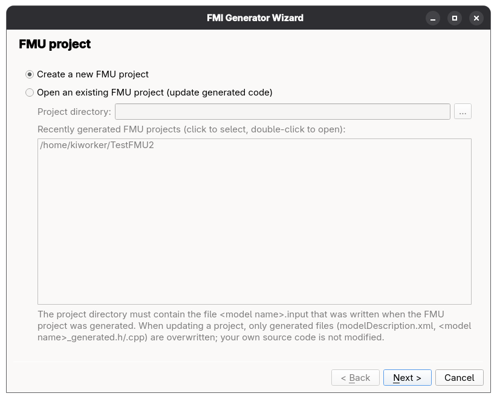
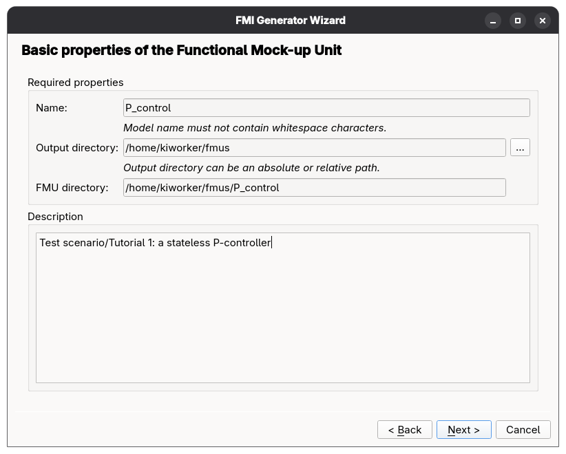
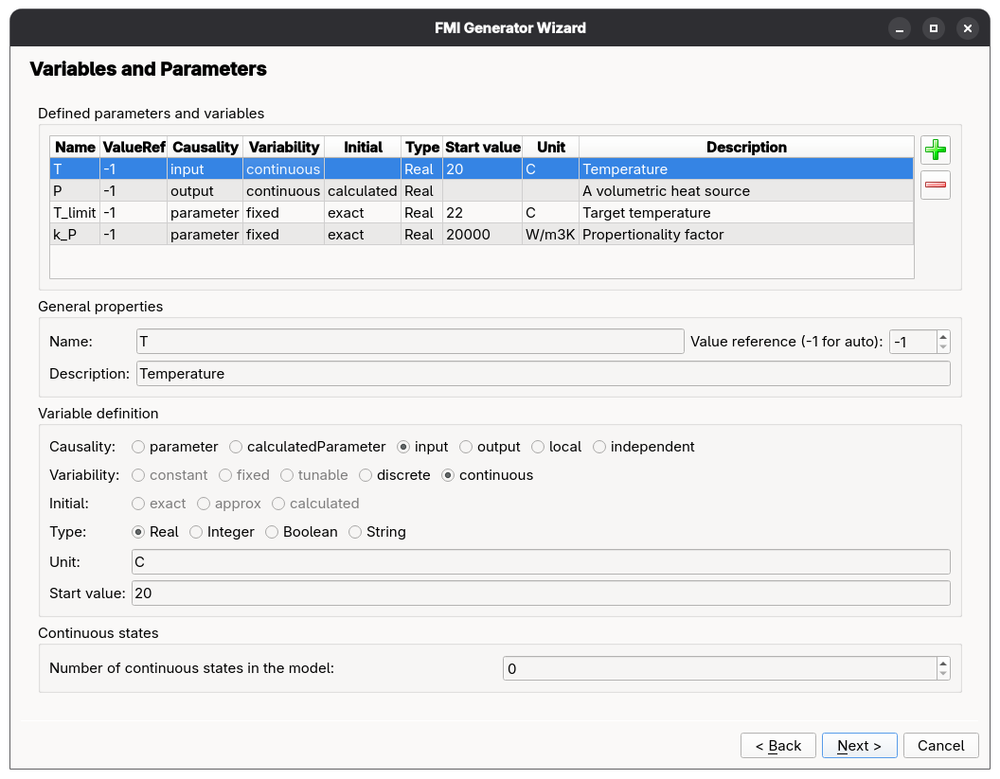
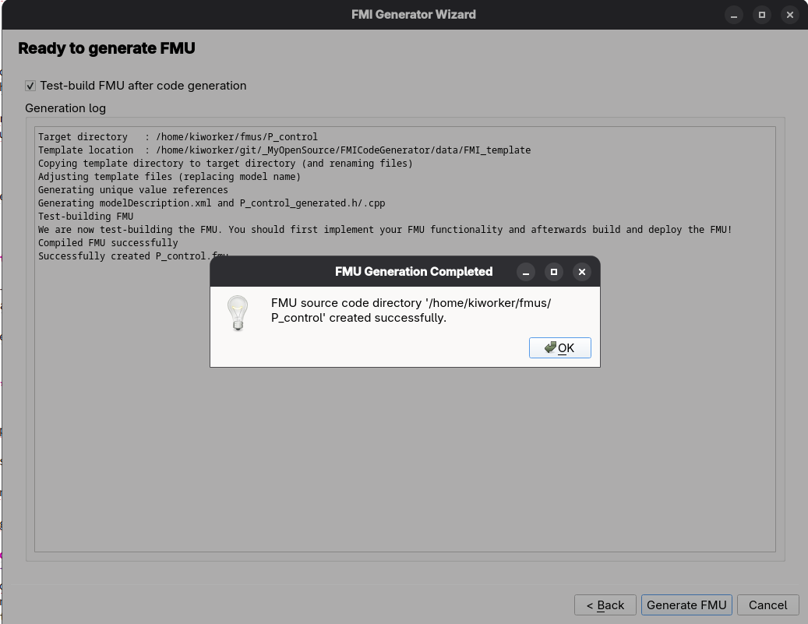

Description
This first tutorial (which doubles as a test case) demonstrates the FMICodeGenerator with a very simple P-controller. It covers the whole way from the FMICodeGenerator wizard to the final, tested FMU.
The controller computes a volumetric heat source. The controller error is the difference between the target temperature and the input temperature, and the gain is the constant controller parameter k_P:
P = k_P * (T_limit - T) if T < T_limit P = 0 otherwise
The controller has no internal states. Its output depends only on the current input value and its parameters.
Generating the FMU Framework and modelDescription.xml
Run scripts/main.py to start the generator tool.
Basic Properties
On the welcome screen, select Create a new FMU project:

On the next wizard page, enter the FMU name. Don’t use spaces or special characters, since the name is used for file names and the C++ class name!
-
enter P_control as model name
-
select the output directory, for example
/home/<username>/fmus. The FMU directory/home/<username>/fmus/P_controlis shown below it. -
optionally enter a description

Then move on to the next page.
Variables
On this page you define all variables published by the FMU: parameters, inputs, outputs, etc.
By default, the code generator creates a string parameter named ResultRootDir with value reference 42. We don’t need it in this example, so remove it (with the minus button).
|
This parameter is useful (and automatically supported by MasterSim) when the slaves generated from this FMU (which may be several) need to write data into their own working directory. MasterSim will automatically generate a working directory for each instantiated slave and pass this user-writable path to each of the FMU instances. |
Now specify the following variables:
| Name | Causality | Variability | Initial | Type | Start value | Unit | Description |
|---|---|---|---|---|---|---|---|
T |
input |
continuous |
--- |
Real |
20 |
C |
Temperature |
P |
output |
continuous |
calculated |
Real |
--- |
W/m3 |
A volumetric heat source |
T_limit |
parameter |
fixed |
exact |
Real |
22 |
C |
Target temperature |
k_P |
parameter |
fixed |
exact |
Real |
20000 |
W/m3K |
Proportionality factor |
T is the sensor temperature, P is the heating power, T_limit is the temperature threshold below which the heating is turned on, and k_P is the controller gain.
Leave the value references at -1; the generator then assigns unique value references automatically. The number of continuous states stays at 0, since the controller has no states.

| The wizard disables options that the FMI standard does not allow for the selected causality/variability combination. For example, you cannot choose an initial attribute for the input variable. |
Generate FMU directory and test-build FMU
On the last wizard page, keep the option Test-build FMU after code generation checked and click Generate FMU:

The generator has now created the following directory structure:
─── P_control
├── bin
│ ├── debug
│ ├── release
│ │ ├── P_control.so
│ │ └── readme.md
│ └── release_x64
│ └── readme.md
├── build
│ ├── bb-gcc
│ │ └── ... (generated build files)
│ ├── build.sh
│ ├── build_VC_x64.bat
│ ├── build_VC_x64_vc2022.bat
│ ├── deploy.bat
│ ├── deployMac.sh
│ ├── deploy.sh
│ ├── P_control
│ │ ├── binaries
│ │ │ └── linux64
│ │ │ └── P_control.so
│ │ └── modelDescription.xml
│ ├── P_control.fmu
│ └── readme.md
├── CMakeLists.txt
├── data
│ └── modelDescription.xml
├── P_control.input
├── P_control.pro
└── src
├── fmi2common
│ ├── fmi2Functions_complete.h
│ ├── fmi2Functions.cpp
│ ├── fmi2Functions.h
│ ├── fmi2FunctionTypes.h
│ ├── fmi2TypesPlatform.h
│ ├── InstanceData.cpp
│ └── InstanceData.h
├── P_control.cpp
├── P_control_generated.cpp
├── P_control_generated.h
└── P_control.hDuring the test build, the shared library bin/release/P_control.so was compiled. The deploy step then assembled the FMU content in the directory build/P_control and zipped it into the file build/P_control.fmu. This FMU is already a valid FMU, but it doesn’t compute anything useful yet.
You will also notice the file /home/<username>/fmus/P_control/P_control.input. This is the project file: a JSON file holding the model name, the description and the variable definitions, including the assigned value references. To change the variables later, start the wizard again, select Open an existing FMU project and choose the directory /home/<username>/fmus/P_control. The generator then updates only the generated files and leaves your own code untouched (see User Guide).
Implement FMU functionality
To implement the FMU source code, you can use Qt Creator and open the project file /home/<username>/fmus/P_control/P_control.pro (or the CMakeLists.txt). This also gives you a convenient way to compile and debug your FMU code.
Alternatively, just open the file /home/<username>/fmus/P_control/src/P_control.cpp in your favourite text editor.
Generated code and user code
The source code in src is split into two parts:
-
P_control_generated.handP_control_generated.cpphold everything that follows from the variable definitions. These files are regenerated whenever you update the project, so don’t edit them. -
P_control.handP_control.cpphold your own code. They are created once and never overwritten by the generator.
In P_control_generated.h you will find a block of C-defines with the value references of all variables:
#define FMI_INPUT_T 1
#define FMI_OUTPUT_P 2
#define FMI_PARA_T_limit 3
#define FMI_PARA_k_P 4The same header also defines the struct FMIVariables, which holds a copy of all published variables. It uses the variable names from the wizard as member names:
struct FMIVariables {
double T; // input, unit: C, Temperature
double P; // output, unit: W/m3, A volumetric heat source
double T_limit; // parameter, unit: C, Target temperature
double k_P; // parameter, unit: W/m3K, Proportionality factor
};P_control_generated.cpp implements the matching member functions of class P_control:
initFMIVariables()-
sets all variables to their start values; it is called in the constructor in
P_control.cpp readFMIVariables(FMIVariables & v)-
copies the current values of all variables into the struct
writeFMIVariables(const FMIVariables & v)-
stores the computed values (outputs, calculated parameters and local variables) from the struct back into the FMU
It also contains the GUID of the FMU and the serialization of the FMU state (needed for fmi2GetFMUstate()/fmi2SetFMUstate()).
So in your own code you don’t need to deal with value references at all. You just read all variables into the struct, compute the outputs and write them back.
The initialization code (if needed) goes into the function init() in P_control.cpp. In this tutorial we don’t need anything there.
Implement ModelExchange functionality
For ModelExchange, the control logic is implemented in the function updateIfModified(). The code only runs when the master has changed input variables (or the time point, or the states) since the last call. Replace the TODO comment with the controller code:
// model exchange: implementation of derivative and output update
void P_control::updateIfModified() {
if (!m_externalInputVarsModified)
return;
// get current values of all variables
FMIVariables v;
readFMIVariables(v);
// P-controller: heating power is proportional to the temperature difference below the limit
if (v.T < v.T_limit)
v.P = v.k_P*(v.T_limit - v.T);
else
v.P = 0;
// store output variables
writeFMIVariables(v);
// reset externalInputVarsModified flag
m_externalInputVarsModified = false;
}With that code in place, the ModelExchange functionality is complete.
Implement CoSimulation functionality
For CoSimulation, the master calls fmi2DoStep(), which in turn calls integrateTo(). Since this simple model has no time dependency (no time integration), the code is the same as for ModelExchange: we read the variables, compute the output and write it back.
// Co-simulation: time integration
void P_control::integrateTo(double tCommunicationIntervalEnd) {
// state of FMU before integration:
// m_currentTimePoint = t_IntervalStart;
// get current values of all variables
FMIVariables v;
readFMIVariables(v);
// P-controller: heating power is proportional to the temperature difference below the limit
if (v.T < v.T_limit)
v.P = v.k_P*(v.T_limit - v.T);
else
v.P = 0;
// store output variables
writeFMIVariables(v);
m_currentTimePoint = tCommunicationIntervalEnd;
// state of FMU after integration:
// m_currentTimePoint = tCommunicationIntervalEnd;
}|
Since the code is identical, you could also just call |
FMU state serialization
At the end of P_control.cpp you find the functions userStateSize(), serializeUserState() and deserializeUserState(). The generated code already serializes the time point and all published variables. These functions are only needed for additional model-specific state data, for example the states of your own time integrator. Our controller has no such data, so we leave the functions as they are.
Building the FMU
If you work with Qt Creator, the modified code can be compiled directly. If everything works, open a console window, change into the directory
/home/<username>/fmus/P_control/build/
and run the build script:
> ./build.shOn Windows, run build_VC_x64.bat. It is set up for Visual Studio 2022; for other versions see Installation.
The code should compile without problems. Otherwise fix any typos.
Deploying the FMU
Next run the deployment script in the same directory:
> ./deploy.shOn Windows, run deploy.bat.
Now P_control.fmu has been created anew, this time with the controller functionality.
Test the FMU with the Compliance Checker
You can now run the FMU through the FMI compliance checker. You can download it from the FMI Tools webpage or extract it from the file third_party/FMUChecker-2.0.4-linux64.zip in the FMICodeGenerator repository (a Windows version is there as well).
On Linux, copy fmuCheck.linux64 into the build directory and run:
> ./fmuCheck.linux64 P_control.fmu[INFO][FMUCHK] FMI compliance checker 2.0.4 [FMILibrary: 2.0.3] build date: Nov 6 2017
[INFO][FMUCHK] Called with following options:
[INFO][FMUCHK] ./fmuCheck.linux64 P_control.fmu
[INFO][FMUCHK] Will process FMU P_control.fmu
[INFO][FMILIB] XML specifies FMI standard version 2.0
[INFO][FMI2XML] Found model identifiers for ModelExchange and CoSimulation
[INFO][FMUCHK] Model name: P_control
[INFO][FMUCHK] Model GUID: {654fa1dd-55cc-40e8-9560-61cfc42b4248}
[INFO][FMUCHK] Model version: 1.3.0
[INFO][FMUCHK] FMU kind: ModelExchange and CoSimulation
[INFO][FMUCHK] The FMU contains:
0 constants
2 parameters
0 discrete variables
2 continuous variables
1 inputs
1 outputs
0 local variables
0 independent variables
0 calculated parameters
4 real variables
0 integer variables
0 enumeration variables
0 boolean variables
0 string variables
[INFO][FMUCHK] No input data provided. In case of simulation initial values from FMU will be used.
[INFO][FMUCHK] Printing output file header
"time","P"
[INFO][FMUCHK] Model identifier for ModelExchange: P_control
[INFO][FMILIB] Loading 'linux64' binary with 'default' platform types
[INFO][FMUCHK] Version returned from ME FMU: '2.0'
[INFO][FMUCHK] Initialized FMU for simulation starting at time 0
0.0000000000000000E+00,0.0000000000000000E+00
2.0000000000000000E-02,4.0000000000000000E+04
4.0000000000000001E-02,4.0000000000000000E+04
.
.
.
9.9999999999998757E+00,4.0000000000000000E+04
1.0000000000000000E+01,4.0000000000000000E+04
[INFO][FMUCHK] Simulation finished successfully at time 10
[INFO][FMUCHK] Model identifier for CoSimulation: P_control
[INFO][FMILIB] Loading 'linux64' binary with 'default' platform types
[INFO][FMUCHK] Version returned from CS FMU: 2.0
[INFO][FMUCHK] Initialized FMU for simulation starting at time 0
1.0000000000000000E+01,4.0000000000000000E+04
[INFO][FMUCHK] Simulation finished successfully at time 10
FMU check summary:
FMU reported:
0 warning(s) and error(s)
Checker reported:
0 Warning(s)
0 Error(s)
Your GUID will be different, since each generated FMU gets its own unique GUID.
Without input data, the checker uses the start values from the modelDescription.xml. With T = 20 °C and T_limit = 22 °C, the controller computes a constant heating power of P = 20000 · (22 - 20) = 40000 W/m3. The first output line at time 0 is written before the first evaluation and still shows the initial value 0.
As a next test, we provide a time series of input temperatures and monitor the calculated heating power.
Running the compliance checker with reference input data
The input data was obtained from a co-simulation with another model: the exchanged data was recorded and written into a csv file in the format expected by the FMI compliance checker. It covers 10 days (864000 s) with outdoor-like temperatures between about -4 °C and 5 °C.
Download the file P_control_in.csv and copy it into the directory with the FMU. Then run the compliance checker with the following command line (Linux):
> ./fmuCheck.linux64 -i P_control_in.csv -h 120 -s 864000 -o P_control_cc.csv P_control.fmuThe options mean:
-i P_control_in.csv-
input data file
-h 120-
step size of 120 s
-s 864000-
simulation end time (10 days)
-o P_control_cc.csv-
output file with the computed results
You should get the same output as in the reference result file P_control_cc.csv. Since all input temperatures are below T_limit = 22 °C, the heating stays turned on all the time, and P varies between 340000 W/m3 and about 527000 W/m3. To see the controller switch off, open the project in the wizard again, lower the start value of T_limit (for example to 3 °C), then rebuild and redeploy the FMU and repeat the test.